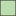
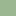

<!doctype html>
<html lang="en">
    <head>
        <meta charset="utf-8">
        <meta http-equiv="X-UA-Compatible" content="IE=edge">
        <meta name="viewport" content="initial-scale=1,user-scalable=no,maximum-scale=1,width=device-width">
        <meta name="mobile-web-app-capable" content="yes">
        <meta name="apple-mobile-web-app-capable" content="yes">
        <link rel="stylesheet" href="css/leaflet.css"><link rel="stylesheet" href="css/L.Control.Locate.min.css">
        <link rel="stylesheet" href="css/qgis2web.css"><link rel="stylesheet" href="css/fontawesome-all.min.css">
        <link rel="stylesheet" href="css/leaflet-search.css">
        <link rel="stylesheet" href="css/leaflet-control-geocoder.Geocoder.css">
        <link rel="stylesheet" href="css/leaflet-measure.css">
        <style>
        html, body, #map {
            width: 100%;
            height: 100%;
            padding: 0;
            margin: 0;
        }
        </style>
        <title>Occupation du sol (2017)</title>
    </head>
    <body>
        <div id="map">
        </div>
        <script src="js/qgis2web_expressions.js"></script>
        <script src="js/leaflet.js"></script><script src="js/L.Control.Locate.min.js"></script>
        <script src="js/leaflet.rotatedMarker.js"></script>
        <script src="js/leaflet.pattern.js"></script>
        <script src="js/leaflet-hash.js"></script>
        <script src="js/Autolinker.min.js"></script>
        <script src="js/rbush.min.js"></script>
        <script src="js/labelgun.min.js"></script>
        <script src="js/labels.js"></script>
        <script src="js/leaflet-control-geocoder.Geocoder.js"></script>
        <script src="js/leaflet-measure.js"></script>
        <script src="js/proj4.js"></script>
        <script src="js/proj4leaflet.js"></script>
        <script src="js/leaflet-search.js"></script>
        <script src="data/2017_OS_1.js"></script>
        <script>
        var highlightLayer;
        function highlightFeature(e) {
            highlightLayer = e.target;

            if (e.target.feature.geometry.type === 'LineString') {
              highlightLayer.setStyle({
                color: '#0004ff',
              });
            } else {
              highlightLayer.setStyle({
                fillColor: '#0004ff',
                fillOpacity: 1
              });
            }
        }
        var crs = new L.Proj.CRS('EPSG:2154', '+proj=lcc +lat_1=49 +lat_2=44 +lat_0=46.5 +lon_0=3 +x_0=700000 +y_0=6600000 +ellps=GRS80 +towgs84=0,0,0,0,0,0,0 +units=m +no_defs', {
            resolutions: [2800, 1400, 700, 350, 175, 84, 42, 21, 11.2, 5.6, 2.8, 1.4, 0.7, 0.35, 0.14, 0.07],
        });
        var map = L.map('map', {
            crs: crs,
            continuousWorld: false,
            worldCopyJump: false, 
            zoomControl:true, maxZoom:13, minZoom:1
        }).fitBounds([[48.82791350020937,2.420354929342243],[48.83739872483012,2.4431986618080366]]);
        var hash = new L.Hash(map);
        map.attributionControl.setPrefix('<a href="https://github.com/tomchadwin/qgis2web" target="_blank">qgis2web</a> &middot; <a href="http://leafletjs.com" title="A JS library for interactive maps">Leaflet</a>');
        L.control.locate({locateOptions: {maxZoom: 19}}).addTo(map);
        var measureControl = new L.Control.Measure({
            position: 'topleft',
            primaryLengthUnit: 'meters',
            secondaryLengthUnit: 'kilometers',
            primaryAreaUnit: 'sqmeters',
            secondaryAreaUnit: 'hectares'
        });
        measureControl.addTo(map);
        document.getElementsByClassName('leaflet-control-measure-toggle')[0]
        .innerHTML = '';
        document.getElementsByClassName('leaflet-control-measure-toggle')[0]
        .className += ' fas fa-ruler';
        var bounds_group = new L.featureGroup([]);
        function setBounds() {
            map.setMaxBounds(map.getBounds());
        }
        var layer_OpenStreetMap_0 = L.tileLayer('http://a.tile.openstreetmap.org/{z}/{x}/{y}.png', {
            opacity: 1.0
        });
        layer_OpenStreetMap_0.addTo(map);
        map.addLayer(layer_OpenStreetMap_0);
        function pop_2017_OS_1(feature, layer) {
            layer.on({
                mouseout: function(e) {
                    for (i in e.target._eventParents) {
                        e.target._eventParents[i].resetStyle(e.target);
                    }
                },
                mouseover: highlightFeature,
            });
            var popupContent = '<table>\
                    <tr>\
                        <td colspan="2">' + (feature.properties['id'] !== null ? Autolinker.link(String(feature.properties['id'])) : '') + '</td>\
                    </tr>\
                    <tr>\
                        <td colspan="2">' + (feature.properties['type'] !== null ? Autolinker.link(String(feature.properties['type'])) : '') + '</td>\
                    </tr>\
                    <tr>\
                        <td colspan="2">' + (feature.properties['surface2'] !== null ? Autolinker.link(String(feature.properties['surface2'])) : '') + '</td>\
                    </tr>\
                    <tr>\
                        <th scope="row">classe</th>\
                        <td>' + (feature.properties['classe'] !== null ? Autolinker.link(String(feature.properties['classe'])) : '') + '</td>\
                    </tr>\
                    <tr>\
                        <th scope="row">surface</th>\
                        <td>' + (feature.properties['surface'] !== null ? Autolinker.link(String(feature.properties['surface'])) : '') + '</td>\
                    </tr>\
                </table>';
            layer.bindPopup(popupContent, {maxHeight: 400});
        }

        function style_2017_OS_1_0(feature) {
            switch(String(feature.properties['classe'])) {
                case 'batiments':
                    return {
                pane: 'pane_2017_OS_1',
                opacity: 1,
                color: 'rgba(35,35,35,1.0)',
                dashArray: '',
                lineCap: 'butt',
                lineJoin: 'miter',
                weight: 1.0, 
                fill: true,
                fillOpacity: 1,
                fillColor: 'rgba(111,111,111,1.0)',
            }
                    break;
                case 'sol_nu':
                    return {
                pane: 'pane_2017_OS_1',
                opacity: 1,
                color: 'rgba(35,35,35,1.0)',
                dashArray: '',
                lineCap: 'butt',
                lineJoin: 'miter',
                weight: 1.0, 
                fill: true,
                fillOpacity: 1,
                fillColor: 'rgba(244,223,138,1.0)',
            }
                    break;
                case 'surface_bois':
                    return {
                pane: 'pane_2017_OS_1',
                opacity: 1,
                color: 'rgba(35,35,35,1.0)',
                dashArray: '',
                lineCap: 'butt',
                lineJoin: 'miter',
                weight: 1.0, 
                fill: true,
                fillOpacity: 1,
                fillColor: 'rgba(92,136,115,1.0)',
            }
                    break;
                case 'surface_eau':
                    return {
                pane: 'pane_2017_OS_1',
                opacity: 1,
                color: 'rgba(35,35,35,1.0)',
                dashArray: '',
                lineCap: 'butt',
                lineJoin: 'miter',
                weight: 1.0, 
                fill: true,
                fillOpacity: 1,
                fillColor: 'rgba(166,206,227,1.0)',
            }
                    break;
                case 'surface_herbacee':
                    return {
                pane: 'pane_2017_OS_1',
                opacity: 1,
                color: 'rgba(35,35,35,1.0)',
                dashArray: '',
                lineCap: 'butt',
                lineJoin: 'miter',
                weight: 1.0, 
                fill: true,
                fillOpacity: 1,
                fillColor: 'rgba(187,220,174,1.0)',
            }
                    break;
                case 'surface_mixte':
                    return {
                pane: 'pane_2017_OS_1',
                opacity: 1,
                color: 'rgba(155,183,145,1.0)',
                dashArray: '',
                lineCap: 'butt',
                lineJoin: 'miter',
                weight: 1.0, 
                fill: true,
                fillOpacity: 1,
                fillColor: 'rgba(155,183,145,1.0)',
            }
                    break;
                case 'voiedecomm':
                    return {
                pane: 'pane_2017_OS_1',
                opacity: 1,
                color: 'rgba(35,35,35,1.0)',
                dashArray: '',
                lineCap: 'butt',
                lineJoin: 'miter',
                weight: 1.0, 
                fill: true,
                fillOpacity: 1,
                fillColor: 'rgba(225,225,225,1.0)',
            }
                    break;
            }
        }
        map.createPane('pane_2017_OS_1');
        map.getPane('pane_2017_OS_1').style.zIndex = 401;
        map.getPane('pane_2017_OS_1').style['mix-blend-mode'] = 'normal';
        var layer_2017_OS_1 = new L.geoJson(json_2017_OS_1, {
            attribution: '',
            pane: 'pane_2017_OS_1',
            onEachFeature: pop_2017_OS_1,
            style: style_2017_OS_1_0,
        });
        bounds_group.addLayer(layer_2017_OS_1);
        map.addLayer(layer_2017_OS_1);
        var title = new L.Control();
        title.onAdd = function (map) {
            this._div = L.DomUtil.create('div', 'info');
            this.update();
            return this._div;
        };
        title.update = function () {
            this._div.innerHTML = '<h2>Occupation du sol (2017)</h2>';
        };
        title.addTo(map);
        var osmGeocoder = new L.Control.Geocoder({
            collapsed: true,
            position: 'topleft',
            text: 'Search',
            title: 'Testing'
        }).addTo(map);
        document.getElementsByClassName('leaflet-control-geocoder-icon')[0]
        .className += ' fa fa-search';
        document.getElementsByClassName('leaflet-control-geocoder-icon')[0]
        .title += 'Search for a place';
        var baseMaps = {};
        L.control.layers(baseMaps,{'2017_OS<br /><table><tr><td style="text-align: center;"></td><td>batiments</td></tr><tr><td style="text-align: center;"></td><td>sol_nu</td></tr><tr><td style="text-align: center;"></td><td>surface_bois</td></tr><tr><td style="text-align: center;"></td><td>surface_eau</td></tr><tr><td style="text-align: center;"></td><td>surface_herbacee</td></tr><tr><td style="text-align: center;"></td><td>surface_mixte</td></tr><tr><td style="text-align: center;"></td><td>voiedecomm</td></tr></table>': layer_2017_OS_1,"OpenStreetMap": layer_OpenStreetMap_0,}).addTo(map);
        setBounds();
        map.addControl(new L.Control.Search({
            layer: layer_2017_OS_1,
            initial: false,
            hideMarkerOnCollapse: true,
            propertyName: 'type'}));
        document.getElementsByClassName('search-button')[0].className +=
         ' fa fa-binoculars';
        </script>
    </body>
</html>
